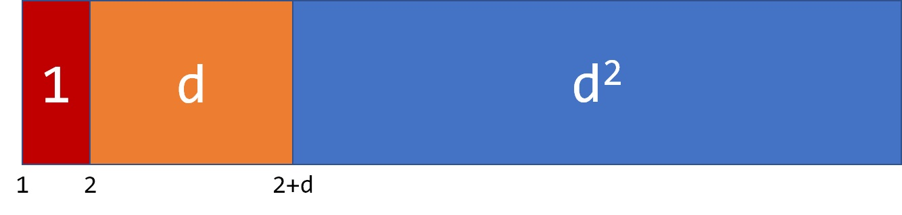
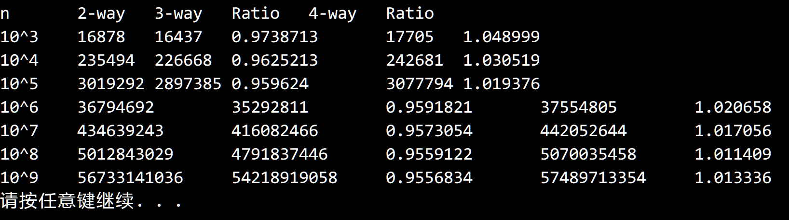

搜索解答
目前已完成到 2.5
2.4.41
上次更新：2019-02-11
题目
2.4.41 Multiway 堆。 根据正文中的描述实现基于完全堆有序的三叉树和四叉树的堆排序。 对于 N=103、106 和 10^9 大小的随机不重复数组， 记录你的程序所使用的比较次数和标准实现所使用的比较次数。
解答
多叉堆和二叉堆的实现上并没有很大的区别， 只不过下沉（Sink）时需要比较的子结点数量变多了，上浮时父结点的下标不再是 $ k /2 $。 于是只要能推出 $ d $ 叉堆的下标换算公式即可解决整个问题。
先考虑 $ d $ 叉堆的在数组中的保存方式， 第一层显然只有根结点，第二层显然有 $ d $ 个结点，第三层则有 $ d d=d^2 $ 个结点，如下图所示： 不难推出第 $ k $ 层有 $ d^{k-1} $ 个结点。
接下来我们对其标号，根结点为 1，以此类推，如下图： 
现在我们来推导某个结点的子结点的下标公式。 结点 $ i $ 的第一个子结点在哪里呢？ 首先要加上本层剩下的结点，再加上它前面结点的所有子结点，再下一个就是它的第一个子结点了。 以 2 号结点为例，它是第二层的第一个结点，第二层共有 $ d^{2-1}=d $ 个结点，剩下 $ d-1 $ 个结点。 2 号结点前面没有更多兄弟结点，于是第一个子结点下标即为 $ 2 + d - 1 + 1= 2 + d $。 3 号结点之后剩余 $ d-2 $ 个结点，加上前面 2 号结点的 $ d $ 个子结点， 它的第一个子结点下标为 $ 3+d-2+d+1= 2+2d $。 不难发现规律，结点序号加一，子结点的下标就要对应加上 $ d \(（要加上前一个结点的子结点）， 这个规律也可以从图上（\) d=3 $）看出来： 1号结点的子结点范围是 $ [2,d+1] $，每加一个结点子结点就要加上 $ d $ 。 于是立即可以推得结点 $ i $ 的子结点下标范围是 $ [d(i-1)+2,di+1] $ 。 代入 $ d=2 $，可以发现是符合我们已知的规律的。
接下来是结点 $ i $ 的父结点， 我们由上面的式子反推可以得到父结点的下标为 $ (i-2)/d +1$（或者 \(\lceil (i-2)/d \rceil\)）。 获得这两个公式之后，只需要将 sink 和 swim 方法中上升和下降的公式做相应更改即可。
测试结果，注意下标可能会超过 int 的范围，请使用 long。： 
代码
using System;
namespace PriorityQueue
{
/// <summary>
/// d 叉堆排序类，提供堆排序的静态方法。
/// </summary>
/// <typeparam name="T">需要排序的元素类型。</typeparam>
public static class HeapMultiway
{
/// <summary>
/// 利用堆排序对数组进行排序。
/// </summary>
/// <param name="pq">需要排序的数组。</param>
/// <param name="d">堆的分叉数。</param>
public static void Sort<T>(T[] pq, int d) where T : IComparable<T>
{
int n = pq.Length;
// 建堆
for (int k = (n - 2) / d + 1; k >= 1; k--)
{
Sink(pq, k, n, d);
}
// 排序
while (n > 1)
{
Exch(pq, 1, n--);
Sink(pq, 1, n, d);
}
}
/// <summary>
/// 令堆中的元素下沉。
/// </summary>
/// <param name="pq">需要执行操作的堆。</param>
/// <param name="k">需要执行下沉的结点下标。</param>
/// <param name="n">堆中元素的数目。</param>
/// <param name="d">堆的分叉数。</param>
private static void Sink<T>(T[] pq, int k, int n, int d) where T : IComparable<T>
{
while ((k - 1) * d + 2 <= n)
{
int j = d * (k - 1) + 2;
// 在 d 个子结点中找到最大的那个
for (int i = 0, q = j; i < d; i++)
{
if (q + i <= n && Less(pq, j, q + i))
j = q + i;
}
if (!Less(pq, k, j))
break;
Exch(pq, k, j);
k = j;
}
}
/// <summary>
/// 比较堆中下标为 <paramref name="a"/> 的元素是否小于下标为 <paramref name="b"/> 的元素。
/// </summary>
/// <param name="pq">元素所在的数组。</param>
/// <param name="a">需要比较是否较小的结点序号。</param>
/// <param name="b">需要比较是否较大的结点序号。</param>
/// <returns></returns>
private static bool Less<T>(T[] pq, int a, int b) where T : IComparable<T> => pq[a - 1].CompareTo(pq[b - 1]) < 0;
/// <summary>
/// 交换堆中的两个元素。
/// </summary>
/// <param name="pq">要交换的元素所在堆。</param>
/// <param name="a">要交换的结点序号。</param>
/// <param name="b">要交换的结点序号。</param>
private static void Exch<T>(T[] pq, int a, int b)
{
T temp = pq[a - 1];
pq[a - 1] = pq[b - 1];
pq[b - 1] = temp;
}
}
}